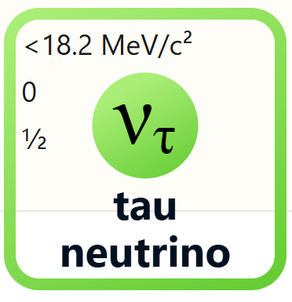

< Back
The tau neutrino is one of the three types of neutrinos in the Standard Model of particle physics.

Tau neutrinos are the most recently discovered flavor of neutrinos. They are produced in tau decay and are involved in various particle interactions. Interestingly, neutrinos 'cycle' through the three types during their lifetimes. Tau neutrinos almost never interact with other matter.